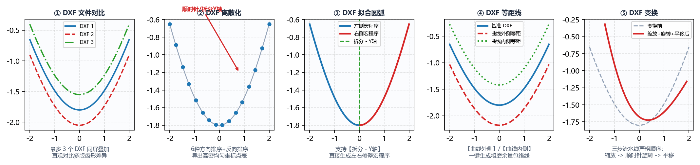

7.1 DXF 处理：文件对比、离散化、拟合圆弧、等距线与变换
在导入外部客户提供的非标 DXF 齿形（如包含 SPLINE 样条曲线的压缩机转子、从总装图上截取的带偏移坐标的花键齿槽）或对砂轮廓形进行二次偏置加工时，工具箱 -> DXF 处理 提供了 5 个免 CAD 的专业几何处理子标签页。

一、子模块 1：DXF 文件对比（多图档彩色图层叠加）
将最多 3 个不同阶段的 .dxf 文件合并叠加到同一个 DXF 图档的不同颜色图层中，并在右侧画布同屏对比：
- 输入参数：
DXF 文件 1（必填）、DXF 文件 2（必填）、DXF 文件 3（选填，留空则只对比前两个文件）、保存文件； - 触发按钮：点击左下角
生成对比 DXF； - 典型应用：将“理论原始齿形 DXF”、“砂轮干涉修正齿形 DXF”与“滚轮刀心轨迹 DXF”叠加在同一张图上直观审阅。
二、子模块 2：DXF 离散化（图元有序重采样与方向整理）
将包含多段圆弧、直线或样条曲线的 .dxf 按指定点密度重采样为有序均匀点集，并导出规范化的多段线 DXF 与点云文本：
- 输入参数：
DXF 文件地址：选择待离散化的源.dxf；最终曲线点密度：默认500（指定重采样总点数）；曲线方向（6 种拓扑排序策略）：自动识别（推荐默认）：自动追踪相连图元首尾端点；顺时针 - X轴+/逆时针 - X轴+：适用于闭合或准闭合环状轮廓；升序 - X轴/降序 - X轴：强制按横坐标 从左到右或从右到左排序；拆分 - Y轴：适用于上下对称或左右分侧的特殊廓形。
反向排序复选框：勾选后将最终点集的起点与终点顺序完全倒置。
- 触发按钮：点击左下角
生成离散化数据（结果自动保存在源 DXF 同一文件夹下）。
三、子模块 3：DXF 拟合圆弧（样条/离散线转相切圆弧 DXF）
将高密度点线或 SPLINE 样条曲线（许多老式数控系统或线切割机不支持直接读取 SPLINE）拟合成由纯 ARC（圆弧）与 LINE（直线） 构成的相切 DXF 图档：
- 输入参数：
DXF 文件地址：选择源.dxf；拟合误差：默认1（单位：，即 ）；曲线方向&反向排序：同上；G3 ⇆ G2复选框：顺逆圆弧方向互换。
- 触发按钮：点击左下角
生成拟合数据。右侧画布将同步展示双子图（上方为拟合圆弧切点分布，下方为微米级拟合残差曲线）。
四、子模块 4：DXF 等距线（法向恒定余量偏置）
沿输入 DXF 曲线的法线方向，向内或向外生成指定宽度的等距偏置包络线（Offset Curve），并自动裁剪消除内凹自交环：
- 输入参数：
DXF 文件地址：选择源.dxf；等距宽度：输入法向偏置距离（，例如粗磨留余量填0.15，或金刚石滚轮半径填0.2）；等距方向：下拉选择曲线外侧或曲线内侧。
- 触发按钮：点击左下角
生成等距线。
五、子模块 5：DXF 变换（缩放、旋转与平移基准对齐）
用于将从零件总图上直接拷出的齿槽曲线（例如圆心在 、齿槽位于顶部的花键 SPL-60T）快速平移或旋转到符合 IGD 标准要求（即 位于工件中径、 位于齿槽对称中心）的位置：
- 输入参数：
DXF 文件地址：选择源.dxf；缩放比例+缩放基准(X:/Y:)：默认比例1.0、基准(0, 0)；旋转角度 (顺时针+)+旋转基准(X:/Y:)：输入顺时针旋转角度（∘^\circ∘，逆时针旋转填负值）及旋转中心坐标；平移距离(X:/Y:)：输入水平平移量 与垂直平移量 （例如某花键分度圆半径为 ，原始图以花键中心为 ，则只需在平移距离的Y:中填入-45，即可将分度圆中径精准移至 ！）。
- 触发按钮：点击左下角
生成变换 DXF。